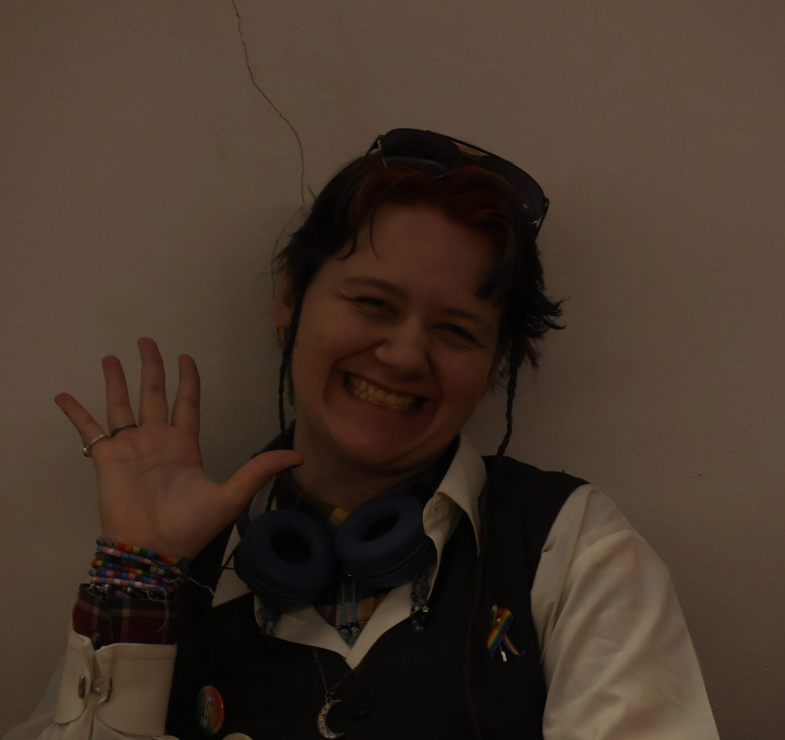
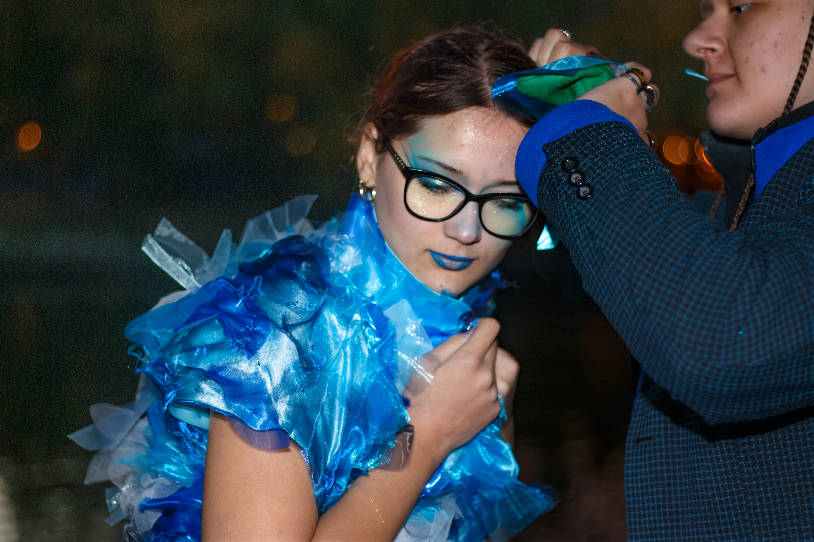

Růčo
Rád si ušpiním ruce od barvy a zamotám se do nití, výsledek určitě bude stát za to!
krátce / 01
Ahojky, jsem Bex - student oděvnictví, samozvaný kreativec a navždycky divnej. Vážím si lidské nedokonalosti a zručnosti.
Rád posouvám své hranice dál a dál a snažím se najít meze nemožného.
kam zabrouzdáme příště? kdo ví!

zachycen mimo naturální místo výskytu02 / Co mě baví
Rád si ušpiním ruce od barvy a zamotám se do nití, výsledek určitě bude stát za to!
Nachází se všude! Rád ji hledám v každodeních maličkost, nudných minutách mezi hodinami, knihách a nově na kurzech figurální kresby.
Rád poznávám nové možnosti, nabírám nové dovednosti. V šití bych byl rád veliký expert a také předal krásné řemeslo dál.
03 / v procesu

v zákulisíProjekty, nápady i milé konverzace